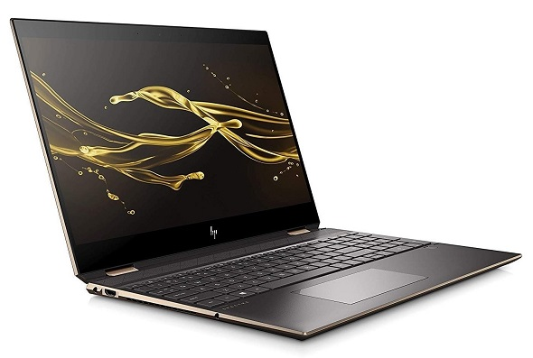

My setup
After four years of pretty faithful service, I've decided that my trusty laptop is due an upgrade and I'm in the market for a new one! #exciting
Current Laptop
I've got a Lenovo Yoga 510 with the following stats:
| OS: | Windows 10 Home (64-bit) |
|---|---|
| Processor: | Intel Core i7-6500U @ 2.50GHz |
| Ram: | 8GB (7.86GB usable) |
| Storage: | 250GB SSD (split between Windows and Lenovo Recovery) |
| Connectivity: | Bluetooth, WiFi, Miracast Compatible |
| Ports: | 1 * USB 3.0, 2 * USB 2.0, 1 * HDMI, 1 * SD Card Reader, Audio, Ethernet |
It's definitely not bad, but it's also not the fastest; it's undoubtedly bloated up with Windows and Lenovo stuff and it gets unbelievably noisy with the smallest of loads. Sure, I could probably strip it back (again), maybe take it apart and clean the fan etc, but it's a good excuse to get something newer and more powerful.
I'll probably hang on to it when I get a replacement - I'd like to bung a Linux OS onto it - but I'm keen to hit the post-Christmas sales and upgrade! If you know a bit about laptops and want to help me out, drop me a line through my socials - I'd really appreciate it!
Options
It's probably worth starting with what I use my laptop for (everything, because I don't have a desktop PC...):
- Normal work-type stuff: Office 365, Internet, Reading etc;
- General social stuff: Internet, WhatsApp etc;
- Programming 1 : Everything from small helpful scripts to bigger projects, data analysis etc;
- Development 2 : Raspberry Pis, Arduinos, Breadboards, Networked Machines etc;
- Gaming: At the moment, I can run the likes of Age of Empires (the originals) and GTA San Andreas.
1 I heavily use VSCode, Git, GitHub Desktop, Arduino IDE, MU, Windows Subsystem for Linux (WSL).
2 Most of this doesn't necessarily require a powerful machine, but it's useful to know what I use my laptop for. Additionally, I'd like to stick with a built-in SD Card reader if possible - it makes working with RPis so much easier!
I host all of my documents etc on OneDrive and all of programming projects on GitHub*, so the internal storage is pretty much all for the system and software. If I ever need to take stuff with me locally (ie if I won't have internet access), I have a collection of USB drives and external HDDs to fall back on.
So, what am I thinking about?
HP Spectre x360

| OS: | Windows 10 Home (64-bit) |
|---|---|
| Processor: | Intel Core i7-10750H @ 2.60GHz / 5GHz, 12MB cache |
| Ram: | 16GB DDR4 (2666 MHz) |
| Storage: | 1TB SSD |
| Connectivity: | Bluetooth, WiFi, Miracast Compatible |
| Ports: | 1 * USB 3.0, 1 * HDMI 2.0b, 2 * Thunderbolt 3, 1 * Mirco SD Card Reader, Audio |
With an AMOLED 4K Ultra HD (3840 x 2160p) anti-reflection touch screen and B&O speakers, this sounds like it would be a pleasure to work on. I actually checked one out in-store and was pleasantly surprised by the size, look and feel of it, as well as by the full size keyboard (I like having a proper Numpad).
I've got a few reservations about it though: the lack of ports (especially USB, which feels like a restrictive oversight) and the near £2k price-tag make me wonder if I'd be paying over-the-odds for a machine with less flexibility that I need. I do like that it comes with a stylus, but does that make up for the other concerns? Not really.